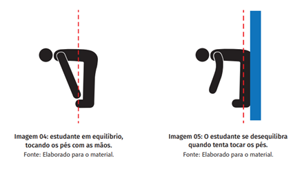

Geometria e Equilibrio
Só podemos ficar em pe com equilibrio, quando uma linha vertical passa pelo meio de nosso corpo, não forçando nada. Quando estamos encostados na parede, forçando algo, a linha vertical fica so por um lado do corpo nos causando desquilibrio.
